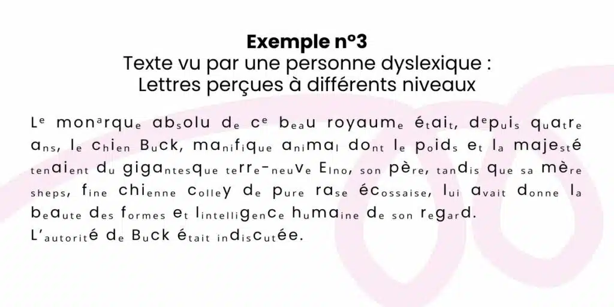

La dyslexie est un trouble de la lecture et de l'écriture persistante chez un individu, caractérisé par des difficultés à épeler les mots, lire rapidement, écrire, lire à voix haute, et comprendre ce qui est lu.
Elle peut être associée aux troubles tels que le Trouble Déficitaire de l'Attention avec Hyperactivité, le Trouble du Spectre de l'Autisme, et la dysorthographie (quasi-systématique chez les dyslexiques).

Image représentant la lecture d'un texte chez une personne dyslexique.